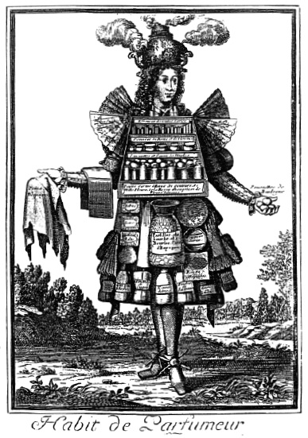

ŞEKİL 92. Fransız gezici parfüm satıcısı, ürünlerini sergilerken
(N. Larmessin, bakır kazıma resim, 1695).75
Fransa Kralı XIV. Louis’nin “leş” gibi koktuğu, Versailles Sarayı’nın merdivenlerinin ise sidik koktuğu söylenir. Avrupa’da “kötü” kokulara karşı hoşgörünün azalması, 19. yüzyılda yeni hijyen uygulamaları sonucunda ortaya çıkmıştır. Uygarlığın yükselme öyküsünün, çeşitli türden kötü kokulara karşı gösterilen geniş bir hoşgörüden, kötü kokmama görüşün yerleşmesi yönünde olduğu söylenebilir.
İtalyan Rönesans’ında ve özellikle de XV. Louis Fransa’sında güzel kokular aşırı derecede kullanılır olmuştur. Bu durum, o dönem insanlarının, anlamsızlık derecesinde pis olmaları ile açıklanmaktadır. Sarayı kokulandırmak için her gün başka bir koku serpiliyordu. Ayrıca eldiven, ayakkabı, çoraplar, gömlekler ve hattâ madeni paralar, kısaca her şey parfümlenmekteydi. Giysi kollarında, içleri misk, muskat ağacı çiçekleri ve kimyon tohumları dolu ajurlu şık gümüş kürecikler taşırlar, ellerinde amber taçları tutarlar ve fildişinden kâseleri gülsuyu ile doldururlardı. Temizlik kavramından, her şeyden önce “kuru tuvalet” anlaşılıyordu. Suyla, en fazlasından “görünür” vücut kısımları olan eller ve yüz yıkanır, geri kalan vücut kısımları ise silinip parfümlenirdi. Saçların temizlenmesi için alışıldığı şekliyle pudra kullanılır ya da kafa derisi konyakla ovulurdu. 18. yüzyılın sonuna doğru hayvansal koku maddeleri kullanılmaz oldu. Ağzı gülsuyu ile çalkalamak ve nefesi süsen merhemi ile kokulandırmak, alışılmış bir şeydi.54
Avrupa’nın “koku mutfağı” olan Grasse yöresi, Côte d’Azur’ün art ülkesinde Cannes kentine 17 km uzaklıktadır. Dünya doğal parfüm üretim ve ticaretinin merkezi olan Grasse’ın yumuşak iklimi, zengin çeşitteki çiçek yetiştiriciliği için çok uygundur. İspanya’daki İslâm egemenliği sırasında kurulan yüksekokullardan sağlanan oryantal tıbbî, farmasötik ve parfümeri bilgileri en geç 16. yüzyılda belirli bir temas içine girmiştir. 1181 yılında yörede kurulan Montpellier Üniversitesi’nden, tıp biliminin yanı sıra baharatçı-eczacıların farmasötik bilgi gereksinimini de karşılanmış, parfümler, pomatlar ve panzehirler geliştirilmiş, burada parfüm eldesi için ilkel damıtma yöntemleri de uygulanmaya başlanmıştır. 1595’te burayı ziyaret eden soylu bir konuğa, bir küçük şişe (flakon) dolusu portakal çiçeği suyu, yöresel ürün olarak armağan edilmiştir. Buna bakılarak da Fransız parfümcülüğünün başlangıcının 400 yıl önceye dayandığı söylenebilmektedir.150
Patrick Süskind’in (doğ. 1949) Das Parfüm: Die Geschichte eines Mörders (Koku: Bir Katilin Öyküsü) (Zürih, 1994) adlı tanınmış romanında iki dünya iç içe işlenmektedir. Bir yanda parfüm ve parfümcülerin kokulu dünyası, diğer yanda ise 18. yüzyıl Fransız kentlerinde insan idrar ve pisliklerinin yarattığı iğrenç kokan dünya. Günümüz insanının o dönemin iğrenç kokan dünyasını zihninde canlandırması pek kolay değildir. Sokaklarda hayvan dışkıları, duvar diplerinde insan sidiği kokuları, ahşap evlerin çürüyen tahtalarından yayılan küf kokuları, ev mutfaklarından çürük lahana ve koyun yağı kokuları, havalandırılmayan odalardan yükselen tozların yaydığı küf kokuları, yatak odalarında depolanan yağlı salamura kokuları, nem kokan yaylı somyalar, akşam yemeği artığının “Ben burada unutuldum!” diye bağıran kokuları, şöminelerden kükürt kokuları, sepihanelerde aşındırıcı çözeltilerin kabartarak yaydığı leşi andıran kokular, mezbahalardan yayılan pıhtılaşmış kan kokuları, yıkanmamış giysilerden yayılan ekşi ekşi ter kokuları, ağızlardaki diş çürüklerinin nefretî kokuları, pisboğaz midelerden gelen soğan-sarmısak kokuları, kart bedenlerden yayılan eski kaşarı andırır ten kokuları, iyileşmeyen yaralardan yayılan irin kokuları...
Süskind’e göre çiçek kokularını akışkan (sıvı) hale getirme sanatı, Mauritius Frangipani tarafından ustalıklı olarak uygulanmış, güzel kokulu çiçeklerin özleri alkol içine çekilerek güzel kokular üretilmiştir. Buna göre mutlak esanslar, çiçek yağları, tentürler, bitkisel ve hayvansal madde özleri, salgılar, balsamlar, reçineler ve de kuru, sıvı ya da mum türünde diğer eczalar, merhem (pomat), pasta, pudra, sabun, krem, briyantin, sakal yağı, güzellik maskeleri gibi çeşitli biçimler eşliğinde banyo sularına, losyonlara, kokulu tuzlara, tuvalet sirkelerine ve çok sayıdaki parfümlere dek çeşitli mallar, parfümcüler tarafından pazarlanıyordu.54 Eserde, parfüm hazırlama uğraşı şu ilginç anlatımla dile getirilmektedir: “Parfüm ustası, tuğladan örülü bir ocağı yakar ve üzerine, dibini bolca örtecek kadar su konmuş bakır imbiği yerleştirirdi. İçine bitki parçalarını atar, çift çeperli ‘Mağripli kafası’nı (sarığa benzer bir tür imbik başlığı) imbiğin başına geçirir, buna da suyun girmesi ve çıkması için iki hortumcuk takardı. Bu düzenek, soğutmayı sağlıyordu; eskiden ise, oluşan buharı yoğuşturmak üzere soğutma işlemi, yelpazelemeyle yapılıyordu. Usta, ardından ateşi körükler, imbikten yavaş yavaş gurultular gelmeye başlardı. Bir süre sonra da sıvı, ‘Mağripli kafası’nın üçüncü hortumundan toplama şişesinin içine, önce çekingen çekingen, damla damla, sonra iplik gibi incecik akmaya başlardı. Şişenin dibinde, kokusu çok hafif olan çiçek suyu, üst kısımda ise saf yağ ya da esans bulunurdu. Çiçek suyu, şişenin alt tarafındaki bir musluktan dışarı akıtılırdı. İmbikten çekilen sıvı, su gibi dupduru gelmeye başlayınca, kazanı ateşten alır, açar, içinde pişe pişe posası çıkmış bitkileri dökerdi”.179
17., 18, ve hattâ 19. yüzyılda parfümler histeri, âdet kesilmesi, melankoli, kuruntu, migren, soğuk algınlığı dâhil hemen her türlü fiziksel ya da zihinsel rahatsızlıklarda ilaç olarak kullanılmıştır. Geç 18. yüzyıla kadar estetikliğinden çok, tıbbî amaçlarla kullanılan en popüler koku maddeleri, hayvansal kaynaklı güçlü ve ağır kokulu parfümlerdi.
Hayvansal koku maddelerinin en önemli iki temsilcisi amber ve misktir. Ak amber, balinanın (“Physeter macrocephalus”) bir boşaltım ürünüdür; esmer amber ise kaşalot (amber) balığının iç organlarında yağlanma yoluyla oluşan balmumu benzeri bir üründür ve insanlar için miske benzer bir anlam taşır. Farsça’da “misk” sözcüğü, Sanskritçe’de “erbezi / testis” anlamına “muskas” sözcüğünden türemiş olup Ortaçağ Avrupa’sında “bisam” ve “moschus” şekillerinde kullanılmıştır. Çeşitli kültürlerde özellikle sinirsel rahatsızlıklara karşı ilaç olarak, veba salgını dönemlerinde ise küçük parçalar halinde yutularak da kullanılmıştır. Misk, Çin, Nepal ve Tibet’te yaşayan genç ve erkek misk geyiği ve de misk keçisinin karnındaki bir bezde bulunan ve kuvvetli kokan bir salgıdır. Bunların cinsel kızgınlık dönemlerinde ya da çiftleşmeleri sırasında onların keselerinden ele geçirilir ve bu maddeleri ele geçirmek için hayvanları öldürmeye gerek yoktur. Misk, Antikçağ’ın bir ilacı olup şarapta çözülerek afrodizyak olarak kullanılmıştır ve günümüz parfümerisinin de önemli bir bileşenidir. Amber (“ambra”) ve misk (“moschus”) dışında misk kedisinin özel salgı bezlerinden elde edilen civet (Alm. “Zibet”, Fra. “civette”) ile kunduz hayası yağı ya da kastoryum (Lat. “castoreum”, Alm. “Bibergeil”) da güzel kokan hayvansal maddelerdir.141 Kunduzun, gerektiğinde kendi kendini hadım ettiği, avcıların kendisini yakalamak istediklerinin sezince, hayalarını dişleriyle koparıp avcıların yoluna atarak onlardan kaçtığı söylenir.180 “Geyik boynuzu yağı” ise, geyik boynuzunun kuru damıtılmasında ele geçen keskin ve kötü kokan bir yağ (“oleum cornu cervis”) olup herhangi bir uçucu yağ içermemektedir.
Avrupalılar hayvansal kökenli kokuları ilk olarak Asya’da keşfettiklerinde bunların erotik uyarıcı olduklarını da saptamışlardır. Bunlar Eskiçağ’lardan beri afrodizyak ve ilaç olarak kullanılmışlardır. Bunlar günümüzde parfüm üretiminde bitkisel koku maddeleri ile aynı ayarda yaygın olarak kullanılmaktadırlar. Parfümcülerin kendi özel kokularını geliştirmede yararlandıkları hayvansal salgılar ve bu hayvanların başlıca yayılım bölgeleri şöyledir: Kaşalot (amber) balığının bağırsaklarından çıkarılan amber (afrodizyak etkisi olduğu söylenir); Kanada, Sibirya, Volga nehri dolayı ve Litvanya’da yayılım gösteren kunduzun cinsel salgısı; Asya’da Çin, Nepal ve Tibet’te yayılım gösteren misk geyiğinin cinsel salgısı (1 kg misk elde etmek için 120 misk geyiğini öldürmek gerekiyordu!); Hindistan, Endonezya ve Afrika’da yayılım gösteren erkek ve dişi misk kedisinin cinsel işaret salgısı. Bu dört koku maddesinin –amber, kunduz hayası yağı, misk geyiği / misk keçisi miski ve misk kedisi miskinin- yerlerine zamanla sentetikleri konmuşsa da, bu hayvanlar hemen hemen soyu tükenme derecesine varıncaya dek avlanmışlardır. Başta bu dört hayvansal koku maddesi olmak üzere yanı sıra mür, akgünlük, aselbent, sandal, laden ve tonka fasulyesi (kumarin içerir) gibi malzemeler, kolay uçucu koku bileşenlerinin “uçuculuk özelliğini” frenleyip kalıcılığını artırmak üzere parfümlerde fiksatör (koku bağlayıcı, sabitleştirici) olarak vazgeçilmez araç olarak kullanılmışlardır.54
Hamam kozmetiği üzerine 15. yüzyıldan kaynaklanan bir kitapçıkta Fransız sabunu, kepek suyu ve krem tartar yağı, güzelleştirme aracı olarak; bir tür mum maskesi (tüm boya kirlerini uzaklaştırmak için), “brezilya odunundan kırmızı allık”, olasılıkla toz haline getirilmiş siklamen yumru köklerinden (“Panis porcinus”) hazırlanmış beyaz düzgün ile çatlamış pürüzlü dudaklara ve kırışmış kuru yüzler için merhemler önerilmektedir.54 Krem tartar, potasyum bitartarat (KHC4H4O6) bileşimli bir tuz olup şarap taşı adı da verilir.
Araplarda alkolü ilk kez el-Râzî’nin 10. yüzyılda ürettiği kabul edilir. Ancak ondan bağımsız olarak simyacı Basilius Valentinus (asıl adı Johan Thölde) (1565-1614), 1450’de Fransa’da alkolü yeniden keşfetmiştir. Bu da tuvalet suyu olarak tanınan alkollü parfümlerin üretimine yol açmıştır. Ancak tuvalet suyunun tarihteki ilk örneğinin Macar Kraliçesi Elizabeth’e ait olması da şaşırtıcıdır. Taze biberiye bitkisinin alkol içinde damıtılmasından elde edilen ve bir keşiş tarafından formülü kraliçeye verildiği söylenen bu kokunun ortaya çıkış tarihi 1357’ye doğrudur. Kraliçenin bu kokunun gücü sayesinde gut hastalığından kurtulduğu, uzun yıllar dinçliğini ve çekiciliğini sürdürdüğü, hattâ 72 yaşındayken bile Polonya Kralından evlenme teklifi alacak kadar güzel olduğu söylenir. Önceleri “Macar Kraliçesinin Suyu”, daha sonraları da “Macar Suyu” (Fra. “Eau de la Reine de Hongrie”, Alm. “Ungarisches Wasser”) olarak tanınmış olan bu tuvalet suyu ile Fransa Kralı XIV. Louis’nin de tedavi gördüğü söylenir. “Karmelit suyu” da benzer şekilde oğulotu (melisa) ve lavantadan elde edilir. Ancak en ünlü tuvalet suyu 1690’larda İtalya’da yapılmıştır. “Köln Suyu” (Alm. “Kölnisch Wasser”, Fra. “Eau de Cologne”) adını alan bu kokunun üretimi ve ünü bugüne kadar sürmüş olup Türkçe’ye önce “kolonya suyu” diye girmiş, daha sonra üretilen buna benzer tüm “eau de toilette” türleri “kolonya” şeklinde adlandırılmıştır. Ancak kolonya adı verilen “hafif tuvalet suyu” kategorisi, koku içeriği bakımından klasik “Kölnisch Wasser”den çok farklıdır ve yalnızca (yüzde 3 koku maddesi + en az yüzde 70 alkol + damıtık su) bileşimi bakımından birbirine benzerler. “Kölnisch Wasser”de alkol yüzdesi daha yüksek, damıtık su yüzdesi ise daha düşüktür. Ancak iyi kalitede “Kölnisch Wasser” eldesi için karışım en az altı ay, kimi zaman da bir yılı aşkın süre meşe odunundan fıçılar içinde dinlendirilerek olgunlaştırılmalıdır.
Kolonya, tuvalet suyu ve parfümün ayrımı, içine katılan “esans / etil alkol” oranına göre değişir. Bu oran kolonyada yaklaşık yüzde 3’tür. En yaygın parfüm şekli olan “eau de parfum” (parfüm suyu) ya da “parfume de toilette” (tuvalet parfümü) [kısaca “parfüm”] yüzde 8-15 oranında koku bileşeni içerir ve bunun kokusu diğer türlere göre daha kalıcıdır. “Eau de toilette” (tuvalet suyu) en hafif parfüm şeklidir ve bunların koku bileşenlerinin yüzdesi yüzde 5-8 olup alkol dereceleri 60o-80o dolayındadır. Parfümlendirilmiş alkol çözeltisi olan “losyon”un alkol oranı ise daha düşüktür (50o-70o).141, 150
“Köln Suyu”nun öyküsüne gelince, Milano’lu bir berber ve parfümcü olan Giovanni Paolo de Feminis (1660-1736), Floransa’daki Santa Maria Novella Manastırı’ndan “Macar Suyu”nun bileşimini öğrenmiş, 1695’te Yukarı İtalya’dan Köln’e göç ettikten sonra ya yeteneğiyle ya da rastlantısal olarak kendi formülünü geliştirmiştir. Yine İtalyan kökenli ve Feminis’in akrabası olan “Yaşlı” Johann Baptist Farina da, 1709 yılında Almanya’nın Köln kentinde kendi güzel koku firmasını kurmuş ve firmanın başına, “parfumeur” olarak oğlu Giovanni (Johann) Maria Farina’yı (1685-1766) getirmişti. İtalya’da Santa Maria Maggiore e Crana (Novara) doğumlu olan Giovanni (Johann) Maria Farina, Feminis’in yeğeni idi. Feminis bulduğu koku reçetesini Maria Farina’ya vermiş ve Maria Farina, 1709 yılında belirli uçucu yağların alkollü çözeltisinden, bugüne dek bilinen Fransızca adı ile tanınan “Eau de Cologne”u (“Köln Suyu”) yaratmıştır. 18. yüzyıl başlarında Avrupa’da ticaret dili Fransızca olduğundan, ürünün adının Fransızca olmasına şaşmamak gerekir. 1700’lü yılların başında Alman pazarlarında tüccarlar, değişik bileşimler halindeki mallarını “Aqua Mirabilis” (“Mucizevî Su”), “Eau de la Reine de Hongrie” (“Macar Kraliçesinin Suyu”), “Eau Imperiale” (“İmparatorluk Suyu”) ve “Eau d’Ange” (“Melek Suyu”) gibi adlar altında pazarlıyordu ve bunların üreticileri belli değildi. Kimine göre “Köln Suyu” Farina’nın özgün buluşu, kimine göre de Feminis’in reçetesinin geliştirilmişidir. Köln’de saygın bir yurttaş olarak yaşayan ve lavanta yağı ve biberiye yağı gibi “Fransız malları ve ilaçları”nın ticareti ile uğraşan Paolo de Feminis, bu damıtılmış “su” ile denemeler yapmış ve başlangıçta bu suyu “Eau Admirable (“Mucizevî Su”) diye adlandırmıştır. Önceleri tıbbî etkisi ön plana çıkartılarak ilaç olarak satışa sunulmuş ve “haftada birkaç kez uygulanmak ve toplam 50-60 damla tutacak şekilde şarap, su ya da etsuyuna damlatılarak kullanılması“ önerilmiştir. “Köln Suyu”nun 1709 tarihli özgün reçetesi, Feminis’e dayanmaktadır. Bunda, temel bileşenler olan bergamut yağı, turunç yağı, lavanta yağı, karanfil yağı, portakal çiçeği yağı, biberiye yağı, limon yağı, neroli (acı portakal çiçeği yağı), karanfil ve misk, saf alkol içinde hafifçe ısıtılarak sindirilmişti.54, 150 “Eau de Cologne”, cilt parfümü olarak kullanılmasının yanı sıra banyo suyuna katılıyor, şarapla karıştırılıyor, kesme şeker üzerine damlatılarak yeniyor, ağız çalkalamada kullanılıyor, hattâ lavman olarak ya da yara lâpası bileşeni olarak kullanılıyor, ona çılgınca tutkun olan kimileri ise doğrudan vücuduna enjekte ettiriyordu!141, 181
Farina’nın “Eau de Cologne”u, piyasadaki benzer ürünleri silip süpürmüştü. O günlerin bu durumu, bir yazar tarafından, Fransızca ada öykünme olarak kaleme alınan Oh! De Cologne adlı kitabında yansıtılmıştır. Farina’nın “mucizevî suyunun” iyileştirici gücü simyacılar, eczacılar ve rakip parfümcüler tarafından ilkin kuşkuyla karşılanmıştır, çünkü Farina harika suyunu bizzat damıtmayla hazırlamıyor, hazır satılan yağları toplayarak alkolde çözüp şişeliyordu. Bunun için büyük bir tesis gerekmiyordu ve 16. yüzyıldan beri bilinen ve kullanılmakta olan 13 çeşit uçucu yağ hazır şekilde piyasadan sağlanabiliyordu. “Köln Suyu”nun kesin özgün reçetesi sır olarak saklanmış olup ayrıntılı formülün ne olduğu tam bilinmemektedir. Evlenmeyen ve çocuğu bulunmayan Farina, akrabaları, kardeşleri ve yeğenleri ile birlikte uzun yıllar “Köln Suyu”nun üretimiyle uğraşmıştır. 150 Firmanın yönetiminde yer alan daha sonraki kuşaklar arasında “Genç” Johann Baptist Farina (1758-1844) ile Jean Marie Farina (1809-1880) firmanın gelişimine damgalarını vurmuşlardır.
Maria Farina, Köln kentindeki ünlü parfümünü 1709 yılında üretmeye başladı ve ilk fabrikasını 1710 yılında kurdu. Yedi Yıl Savaşları’ndan (1756-1763) sonra bu “Aqua mirabilis”i (“mucizevî su”) üretenlerin sayısı 114’e yükseldi. Bunu çok beğenen Fransız askerleri, dönüşlerinde bundan Paris’e getirdiklerinde “Eau de Cologne” diye nitelediler. Köln şehrinde oturan parfümcü Wilhelm Mülhens, bunu “4711” numarası altında üreterek ünlendirdi. Üretici firmanın adresi, “Eau de Cologne & Parfumerie – Fabrik Glockengasse No. 4711, Ferdinand Mülhens’in Atlı Postasının Karşısı” şeklindeydi. Napoléon Bonaparte ve Goethe buranın müşterileri arasındaydı.164 Başlangıçta bir tür panzehir olarak satılan “Eau de Cologne”, Napoléon Bonaparte’ın 1810 tarihli bir kararnamesi ile parfüm olarak da satılmaya başlandı. Napoléon’un bu kararnameyi imzalamasının nedeni, kendisinin “Eau de Cologne”a duyduğu aşırı ilgiydi. Napoléon, temizliğe ve güzel kokulara aşırı derecede düşkündü. Onun seçkin sabunu “Brown Windsor”, bergamut yağı, kuru karanfil yağı ve yasemin yağı içeriyor ve İngiltere’den geliyordu. Ellerine sürekli olarak parfümlü kremler süren ve savaş zamanlarında parfümlü eldivenler kullanmayı ihmal etmeyen Napoléon, kimi günler (özellikle savaştan hemen önce) bir şişe “Eau de Cologne” içmekle kalmıyor, günlük banyosunun ardından bu hoş kokulu sıvıdan her sabah kafasından ve omuzlarından aşağı bir şişe döktürüyordu. Napoléon’un ayda altmış şişeden fazla “Eau de Cologne” kullandığı söylenmektedir.12
Uluslararası parfümcülük dili Fransızca’dır. Bunun en yalın göstergesi, özgün şekliyle bir Alman üretimi olan “Köln Suyu”nun özgün adı olan “Kölnisch Wasser” adı pek bilinmez ve kullanılmazken, parfümeri dünyasında bunun yerine, Fransızcası olan “Eau de Cologne” adı kullanılmaktadır. Parfüm üretimi “Köln Suyu” dışında öncelikle Güney Fransa’da Grasse ve Montpellier’de ve Paris ve Londra’da odaklanmıştı. Çoğu doğal yağlar, parfümcülerin “Mağripli kafası” (“Mohrenkopf”) diye adlandırdıkları damıtma aygıtında kazanılıyordu. Bu ad, aygıtın üzerine yerleştirilen ve içinde soğuk su bulunan yoğunlaştırma tası bir sarığa (türbana) benzediğinden verilmişti. Buharlar hem su hem de yağ içeriyordu. Damıntı, damla damla “Floransa şişesi” diye adlandırılan bir şişe içinde toplanıyor ve yağ tabakası, özgül ağırlık değerine bağlı olarak su tabakasının üstünde ya da altında toplanıyordu. Özütlemenin başka olanakları da vardır: Anflöraj (Fra. “enfleurage”), uçucu yağ içeriği çok düşük olan ve damıtma yoluyla esansı alınamayan yasemin ve teber (tutya çiçeği) gibi çiçeklere uygulanan bir yöntem olup bunda yağ evresi çiçek kokusuyla doyana dek çiçekler, eritilmiş domuz ya da dana yağı gibi kötü koku bileşenleri içermeyen hayvansal sabit yağların içinde soğukta bekletilir (Fra. “enfleurage à froid”: soğuk anflöraj), yağ evresi koku bileşenlerine doyurulduktan sonra yüksek yüzdeli alkole batırılarak güzel kokular alkol evresine geçirilir (lavaj). 50-70oC’da çalışılan maserasyon [Fra. “macération” ya da “enfleurage à chaud” (“sıcak anflöraj”)] işleminde ise çiçekler sıcak yağ içinde yumuşatıldıktan sonra sıcak yağ boşaltılır ve üzerine yeniden taze çiçek konur. Sonunda bunun da ardından, anflörajda olduğu gibi kokulu yağ evresine alkol eklenerek lavaj (yıkama) işlemi uygulanır.54, 150 Anflöraj yöntemi, Homeros (İÖ 8. yüzyıl ortaları) zamanında da biliniyordu. Günümüzde anflöraj yöntemi yalnızca Fransız kenti Grasse’daki parfümeri fabrikasında uygulanmaktadır. Bunda, eski Mısır’da da kullanılan gelenekle, 2 kısım domuz yağı ve 1 kısım sığır yağı kullanılır. Çiçeklerin taç yaprakları, her iki yüzeyine ince ve kokusuz bir hayvansal yağ karışımı sürülmüş cam levhalar arasına serilerek bir süre bekletilir; hayvansal yağ tabakası, uçucu yağla doyana kadar yeni yapraklar serilip alınarak bu işlem sürdürülür; cam levhalara çok fazla bastırmadan çiçeklerden yağa geçen koku bileşenleri, buradan etil alkolle özütlenerek alkol içine çekilir. Bu alkollü özüt, -20oC’da süzülerek hayvansal yağ ve mumlardan arındırılır. Vakumlu ortamda alkolün uzaklaştırılmasıyla “absolü” adı verilen koku ürünü elde edilir. Bu yöntem, ısıya dayanıklı olmayan, çok duyarlı ve nazik çiçeklere uygulanır.141
İngiltere’de Kraliçe I. Elizabeth (1533-1603) döneminde pomat, kokulu sular ve tütsüler türünde parfüm kullanımı başlamıştır. 17. yüzyılda Avrupa’da kozmetiklerin kullanılması çok yaygınlaşmış ve birçok Avrupa ülkesinde kozmetik kullanımını yasaklayan yasalar konmuştur. İngiliz Parlamentosu’nun 1770 tarihli bir yasasına göre, bir kadının, parfüm ve değişik giyim-kuşam marifetiyle bir erkeği evlenmeye tavlaması, büyücülükle eş tutuluyor ve yapılan evlilik geçersiz sayılıyordu. Buna göre: “Yüz boyası, koku, takma diş, takma göğüs ve kalça, topuklu ayakkabı kullanarak koca bulan tüm kadınların evliliği, kocası şikâyetçi olduğunda, yasa karşısında hükümsüzdür. Bu suçu işleyenler göz boyamacılıkla suçlanacaktır”. O dönemde, özellikle “pomander” (“amber elma’sı” anlamına gelecek şekilde Fra. “pomme d’ambre”, İta. “pomä ambre” → “pommander”; bunların yanı sıra “koku elması” anlamlarında Almanca’da “Riechäpfel” ve Fransızca’da “pommes de senteur” terimleri de kullanılmaktaydı) diye adlandırılan koku gerdanlığı çok tutuldu. Bunda çeşitli reçine ve çiçeklerin yanı sıra öncelikle de güçlü kokuya sahip hayvansal koku maddelerinden (amber, “zibet” ve “moschus” gibi misk çeşitlerinden) hazırlanan topakların küre şeklinde biçimlendirilen süslü metal kapçıkların içine konması ve gerdanlık haline getirilip zincirle kadınların boynuna takılması söz konusu idi.164 Zamanla yeni kokular geliştirilmiş, bu uğraş Fransız Devrimi sırasında da duraksamamış, hattâ üretilen yeni bir parfüme “Parfum a la Guillotine” (Giyotine Uygun Parfüm) adı verilmişti.
Fransız Riviera’sı uçucu yağ üretiminde en büyük tek merkez olmasına karşın, doğal bir tekel değildi. Sicilya’nın bergamut ve limon yağları ünlüydü. Sandal ağacı Zengibar’dan, lavanta çiçeği İngiltere’den, gül ağacı Brezilya’dan, anason ve tarçın Çin’den, meyankökü Türkiye’den, kâfur Formoza’dan, gül Bulgaristan’dan (Kızanlık / Kazanlık yöresinden) sağlanıyordu. Misk ise bir hayvansal ürün olup Orta Asya’nın boynuzsuz, küçük, geviş getiren bir hayvanı olan erkek dağ ceylanı ya da misk geyiğinden (“Moschus moschiferus”), Habeşistan’da uzun bacaklı vahşi misk kedisinden (“Virerra”) ya da Moğolistan dağlarında yaşayan aşırı korkak, küçük misk keçisinden (“Moschus moschiferus”) elde ediliyordu. Dağlarda yaşayan erkek misk geyiğinin göbeklerinin alt bölümündeki kan torbasından, yanık kırmızı renkte pelte şeklinde 5-6 cm uzunluğunda ve 3-4 cm genişliğinde ceviz büyüklüğünde bir kesenin içinde bulunan bu güzel kokuyu hayvan, dişiyi çekebilmek amacıyla kullanır. Avcılar tarafından tuzak kurularak yakalanan genç hayvanın salgı bezi çıkarılır. Yalnızca erkek misk geyiğinin salgı bezi, bir yıl içinde 25 gram kadar bu güzel kokuyu salgılamaktadır. Nane yağı ve pelin yağı ise Amerika’dan sağlanıyordu. Misk otu (“Mimulus moschatus”) da benzer kokuya sahiptir.182 Osmanlılarda misk kedisinin kuyruğu, çamaşır bohçalarına ufak keseler içinde konur, kimi kimseler bunu koyunlarında taşır, ısındıkça güzel bir koku yayardı.98